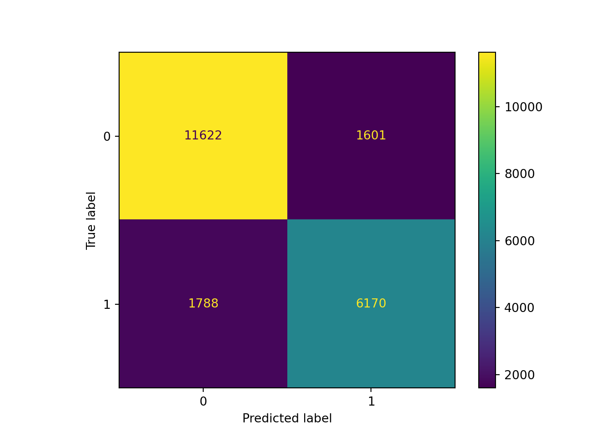

【徹底比較】センチメントスコア算出手法！！ - 第3回
おはこんばんにちは。センチメントスコア算出企画の第3弾です。 今回はナイーブベイズ分類器のセンチメントスコア算出方法を実践します。
1. 分析手法の説明
ナイーブベイズ分類器とは
ナイーブベイズ分類器、または単純ベイズ分類器と呼ばれる手法です。分類問題をベイズの定理を用いて解く手法を指します。まず、ベイズの定理から説明します。入力情報$X$が与えられた時に、出力$Y$が得られる確率は以下で表すことができます。
$$ P(Y|X) = \frac{P(X|Y)P(Y)}{P(X)} $$
これがベイズの定理で、$P(Y)$は事前確率、$P(Y|X)$は事後確率、$P(X|Y)$は尤度と呼ばれます。ナイーブベイズ分類器が利用される典型的な問題に迷惑メールの分類問題があります。この問題だと、$X$は受信メールに含まれている単語、$Y$は迷惑メールかどうかを表す2値(0,1)のデータとなります。受信メールに$\hat{X}$という単語が含まれている際に、そのメールが迷惑メール($Y=1$)である確率は$P(Y=1|X=\hat{X})$であり、それは以下の3つで求められます。
- 迷惑メールが発生する確率$P(Y=1)$
- そのメールが迷惑メールだった際に単語$\hat{X}$が含まれている確率$P(X=\hat{X}|Y=1)$
- 単語$\hat{X}$が発生する確率$P(X=\hat{X})$
ただし、事後確率によって文書分類を行う際には、上式の確率を計算する必要はありません。知りたいのは確率の値ではなく、ある$X$が与えられた時に$P(Y=1|X)$と$P(Y=0|X)$のどちらが大きいかですので、共通している分母は計算から除外することができ、分子$P(X|Y)P(Y)$をそれぞれ計算し、その大小関係によって迷惑メールかどうかを割り振ればよいことになります。
また、上記は迷惑メールの分類に限らず、今回行おうとしているセンチメント情報、つまりその文書内容がポジティブかネガティブかを分類する問題に対しても使えることがわかると思います。
事後確率の推定方法
求めたい事後確率の分子を求める方法について説明します。その計算のためには事前確率$P(Y)$と尤度$P(Y|X)$を求める必要がありますが、基本的にそれぞれにパラメトリックな確率分布を仮定するため、確率分布のパラメータを推定する必要があります。なお、事前確率が従う確率分布を事前分布と呼びます。
入力単語ベクトルを$X={x_1,x_2,…,x_N}$とします。ここで、各$x_n$は$n$番目の単語を表します。各$x_n$が生起する条件付確率は語順や周辺の単語に依存しないと仮定すると、$P(X|Y)$は以下のように書き替えることができます。
$$ P(X|Y) = \Pi_{i=1}^N P(x_i|Y) $$
では、上記の条件付確率をどのように求めるかに話を移しましょう。今、$P(・)$のそれぞれにとある確率分布を仮定すると、$P(X|Y)P(Y)$は
$$
P(Y;\Theta,\Phi)P(X;\Theta|Y) \tag{1}
$$
と書けます。ここで、$\Theta={\theta_1,\theta_2,…,\theta_M}, \Phi={\phi_1,\phi_2,…,\phi_L}$は確率分布のパラメータです。このパラメータを求めることができれば、(1)を計算でき、$X$が与えられた際の$Y={0,1}$のそれぞれの事後確率を求めることができます。
このようにして、事後確率の推定問題を確率分布のパラメータの推定問題に帰着させることができました。具体的に、どのようにしてパラメータを推定するのかについて、見ていきましょう。
学習データセットとして、
$$ {(S,T)} = (Y=S_1,X=T_1), (Y=S_2,X=T_2), …,(Y=S_D,X=T_D) $$
が得られているとします。ここで、$D$はサンプルサイズです。また、$Y$は$1$の時にポジティブ、$0$の時にネガティブとし、独立を仮定します(つまり$S$は0,1の2値を取る)。最も望ましいパラメータ$\Phi$の値は、学習データセットの(1)の同時確率を最大にするパラメータを推定値として選択することにし、$\Theta$は事前にわかっている知識を用いて何らかの値を定めます。つまり、以下を最大にするということです。
$$ M(\Theta,\Phi) = \Pi_{j=1}^{D}P(S_j;\Theta,\Phi)P(T_j;\Theta|S_j) \tag{2} $$
(2)は以下のように変形することができます。
確率分布のパラメータの推定方法
次に気になるのは$\Theta, \Phi$を具体的にどのようにして計算するかです。これは確率分布を特定しないと進めないため、尤度には多項分布、事前分布にはディリクレ分布を仮定します。一般的な仮定だと思います。多項分布とは確率密度関数が以下のような確率分布です。
$$ P(n_1,…,n_k) = \frac{n!}{n_1!…n_k!}p_1^{n_1}…p_k^{n_k} $$
ここで、$n_i$は非負で$n=n_1+…+n_k$です。また、$p_1+…p_k=1$を満たします。多項分布は名前から分かるとおり、二項分布の拡張版です。二項分布はコイン投げが例として使われますが、多項分布はサイコロ投げが従う分布です($n=6, p_i=1/6$)。テキスト解析の文脈では、$n_i$は文章に含まれる単語$i$の出現回数になります。
ディリクレ分布は同時確率密度関数が以下のような確率分布です。
$$ f(x_1,…,x_n) = \frac{\Gamma(\alpha)}{\Gamma(\alpha_1)…\Gamma(\alpha_n)}x_1^{\alpha_1-1}…x_n^{\alpha_n-1} $$
ここで、$x_i$は非負で$x_1+…+x_n=1$、$\alpha_1+…+\alpha_n=\alpha$はパラメータです。今、$\alpha_i$を正の整数とすると$\Gamma(\alpha_i)=(\alpha_{i-1})!$より、
$$ f(x_1,…,x_n) = \frac{(\alpha-1)!}{(\alpha_{1}-1)!…(\alpha_n-1)!}x_1^{\alpha_1-1}…x_n^{\alpha_n-1} $$
となります。多項分布とディリクレ分布の確率分布を見比べると、とても似た形であることがわかります。両者は形は似ていますが、関数の入力が異なります。多項分布は各単語の生起確率がパラメータ、指数部分の出現回数が入力である一方、ディリクレ分布は生起確率が入力、出現回数がパラメータになります。また、ディリクレ分布は多項分布の共役事前分布となっています。 これらの確率分布を仮定すると、(3)は以下のようになります。
ここで、$p_{k_j}$はポジティブ(またはネガティブ)である文書($k={1,0}$)で単語$j$が出現する確率、$\tau_{k_j}=\sum_{i=1}^{Q_k}c_{kij}$はポジティブ(またはネガティブ)である教師データに含まれる単語$j$の総数、$\alpha_j$は単語$j$のディリクレ分布のパラメータ、$V$は単語数の上限を表しています。$Z(\vec{\alpha})$は確率の総和を1とするための正規化定数で、ベイズ統計学では分配関数と呼ばれます。(3)に対応させると、$\Theta=\vec{p}={p_{k_j}}_{k_j=0_1}^{1_V}$、$\Phi=\vec{\alpha}={\alpha_j}_{j=1}^V$となります。ここから、パラメータ$p_{k_{j}}$の推定値を$M(\vec{\alpha};\vec{p})$を最大にする値として求めます。ただし、以下の制約条件があります。
$$ \sum_{j=1}^V p_{k_{j}}=1 $$
つまり、以下の最適化問題として定式化できます。
この問題を解くためにラグランジュ未定乗数法を使用します。
となるので、$\lambda$を(5)式に代入すると、
と、事後分布を最大にするパラメータを求めることができます。$p_{l_m}$の直感的な解釈は、ポジティブ(ネガティブ)な文脈での単語$m$の出現頻度が全ての単語の出現頻度に占める割合です。ただ、それだけだと学習データに含まれない単語の$p_{l_m}$が０となってしまい、事後確率も0となってしまいます。上記では、事前分布にディリクレ分布を使用しているため、$p_{l_m}$が0にならないことがわかります($+\alpha_m$の部分)。所謂、頻度ゼロ問題を解決しています。
ところで、ディリクレ分布の$\alpha_m$は事前にわかっている知識を用いて何らかの値を定めると言っていましたが、どのようにして求めるのでしょうか？推定値を見ればわかる通り、$\alpha_m$は文書内における単語$m$の主観的な出現頻度を表していると解釈できます。ですが、正直$\alpha_m$に意味を持たせている人は少なく、先述した頻度ゼロ問題を解決できればよいと考えている人が大半ではないでしょうか。つまり、$\alpha_m=\alpha+1$($\alpha$は定数、例えば1とか)としてしまうということです。これは加算スクリーニングと呼ばれます。
さて、このようにして求めた分類器で分類を行います。思考実験として、1つの単語を除いて他の単語がニュートラルかつ各単語の出現頻度が全て同じ文書を考えます。この場合、その1つの単語が両文脈(ポジティブ/ネガティブ)のうち相対的に頻出である文脈へ分類されることになります。
ナイーブベイズ分類器は教師あり学習です。つまり、正解ラベルデータを用意する必要があります。これがナイーブベイズ分類器の欠点ですが、一方でデータがある場合には特殊な文脈でも分類が可能です。
ナイーブベイズ分類器の利点・欠点
ナイーブベイズ分類器の利点・欠点は以下のようなものだと思います。
<利点👍>
- 辞書が不要
- 未知語が出現しても分類できる
- 分類過程がわかりやすい
<欠点👎>
- 学習のための教師ありデータセットが必要
- 文章の語順を考慮できない(bag of words)
欠点の文章の語順を考慮できないという点は辞書ベース手法にも当てはまりますが、文章中の単語の発生回数を使用しているため、語順の関係性や係り受けといった情報を活用することができません。そのため、例えば「良くない」のような肯定語を否定するような言い回しは、ポジティブと分類されやすい可能性があります。
2. ナイーブベイズ分類器の実践
ここからは、ナイーブベイズ分類器を用いて実際に分析をしていきます。学習データセットの景気ウオッチャー調査では、タクシー運転手や小売店の店主、旅館の経営者など景気に敏感な方々(景気ウオッチャー)に対して、5段階の景況感とその理由を毎月アンケートしています。5段階は、「良い(◎)」、「やや良い(○)」、「変わらない(■)」、「やや悪い(▲)」、「悪い(×)」となっています。
まずサンプルデータを読み込みます。
filePath = r"C:\Users\hogehoge\Watchder\RawData\*.csv"
import pandas as pd
import glob
files = glob.glob(filePath)
lists = []
for file in files:
df = pd.read_csv(file, encoding="shift-jis")
lists.append(df)
sample = pd.concat(lists, axis=0, ignore_index=True)
sample = sample[((sample.追加説明及び具体的状況の説明=='−')|(sample.追加説明及び具体的状況の説明=='＊')==False)]
sample = sample[sample.景気の現状判断!='□']
corpus = sample.追加説明及び具体的状況の説明.str.replace("・","")
corpus.head()
## 0 店頭の取扱額が前年比約120％と好調であった。
## 1 当施設の利用乗降客数は１月26日時点で前年比130.1％となっており、１月としては過去最高の...
## 2 年末の消費の反動もあってか、客の動きがやや鈍い。ただ、相変わらず高額商材が売れているというこ...
## 3 外国人観光客による売上が前年比152％と好調を継続しているほか、来客数が前年比102％と好調...
## 4 積極的に景気が上向きにあるとまではいいづらいものの、３か月前との比較では改善している。
## Name: 追加説明及び具体的状況の説明, dtype: object
なお、自由記述部分(追加説明及び具体的状況の説明)が「－」は回答が存在しない、「＊」は主だった回答等が存在しないため、サンプルから除外しています。 また、景気の現状判断が「変わらない(■)」のデータは分類対象外とするため、こちらもサンプルから除外しています。
次に、分類対象となるラベル(景気の現状判断)を数値へ加工します。「良い(◎)」と「やや良い(○)」を1、「やや悪い(▲)」、「悪い(×)」を0とする2値分類です。
from sklearn.preprocessing import LabelEncoder
score_mapping = {'◎': 1, '○': 1, '▲': 0, '×':0}
labels = sample.景気の現状判断.map(score_mapping)
自由記述部分の処理を行います。前節で説明したとおり、ナイーブベイズ分類器は入力変数として、各文章に含まれる単語の出現回数が必要です。このデータを作成するためには、
- サンプルデータの文章を形態素に分解
- 各文中に形態素が出現する回数をカウント
の処理が必要です。英語であれば、この処理はsklearn.feature_extraction.CountVectorizerが行ってくれますが、日本語の場合はそうはいかず、形態素解析のための関数を渡してやる必要があります。よって、入力：文章ベクトル、出力：形態素のリストとなる関数tokenizer_sudachiを定義し、それをsklearn.feature_extraction.CountVectorizerの引数analyzerに渡しています。
from sudachipy import tokenizer
from sudachipy import dictionary
from sklearn.feature_extraction.text import CountVectorizer
tokenizer_obj = dictionary.Dictionary().create()
mode = tokenizer.Tokenizer.SplitMode.A
tokenizer_sudachi = lambda t: [m.normalized_form() for m in tokenizer_obj.tokenize(t, mode)]
vectorizer = CountVectorizer(analyzer=tokenizer_sudachi)
counts = vectorizer.fit_transform(corpus)
countsはサンプルサイズ×出現単語総数となるsparse matrixで、これがナイーブベイズ分類器の入力変数となります。
入力countsと出力labelsが準備できたので、sklearn.model_selection.train_test_splitを使って学習データとテストデータにランダムに分割します。
from sklearn.model_selection import train_test_split
X_train, X_test, y_train, y_test = train_test_split(counts, labels, test_size=0.5, random_state=42)
前回の辞書ベース手法ではサンプル全体を用いて予測を行いました。それは辞書に含まれる極性スコアが景気ウオッチャー調査のサンプルデータをもとに作成したものではなく、過学習しないためです。ただ、今回のナイーブベイズ分類器はそのデータを用いてパラメータの学習を行う教師あり学習のため、その性能を適切に評価するためには学習データ以外のデータを検証用に残しておく必要があります。
いよいよ、学習パートに入ります。学習にはsklearn.naive_bayes.MultinomialNBを使用します。これは前節で説明した(6)でパラメータの推計を行い、予測モデルを構築するクラスとなっています。引数としてalphaを指定する必要がありますが、これは事前分布であるディリクレ分布の$\alpha$です。デフォルト値である1を指定すると、加算スクリーニングとなります。
from sklearn.naive_bayes import MultinomialNB
clf = MultinomialNB(alpha=1.0)
clfとしてインスタンス化することができました。
では、fit()メソッドを用いて、学習を行います。
clf.fit(X_train, y_train)
## MultinomialNB()
学習が完了しました。score()メソッドで学習データに対する正解率を確認してみましょう。
clf.score(X_train, y_train)
## 0.874935083329399
およそ87.5%ということで、高い正解率を得ることが出来ました。
ただ、学習データに対して過学習している可能性があるため、テストデータでの精度も確認してみましょう。テストデータの予測値を計算するためにはpredictメソッドを使用します。
y_pred = clf.predict(X_test)
次に、混同行列(ConfusionMatrix)を作成します。これは分類モデルの性能を評価するために用いられるもので、横軸に予測値、縦軸に実際の値をとり、(1,1)と(2,2)要素に多くサンプルが集まるほど正しい予測ができています。
from sklearn.metrics import classification_report, confusion_matrix, ConfusionMatrixDisplay
import matplotlib.pyplot as plt
ConfusionMatrixDisplay(confusion_matrix(y_test, y_pred)).plot()
## <sklearn.metrics._plot.confusion_matrix.ConfusionMatrixDisplay object at 0x000000000EC7CA48>
plt.show()

たまに、正解率が高くてもほとんど0を予測するだけのモデルになっており、正解データも0が多いデータであるため、見かけ上上手く分類することができていることもありますが、今回に限ってはしっかりと識別できているようです。正例よりも負例の予測精度が高いようです。単純に負例のサンプルサイズが大きいのが原因かも知れません。
最後に、性能評価のための分類指標を記載します。各指標の意味はここでは説明しませんが、正解率は学習データと変わらず、過学習はしていないようです。
print(classification_report(y_test, y_pred))
## precision recall f1-score support
##
## 0 0.87 0.88 0.87 13223
## 1 0.79 0.78 0.78 7958
##
## accuracy 0.84 21181
## macro avg 0.83 0.83 0.83 21181
## weighted avg 0.84 0.84 0.84 21181
3. 終わりに
このpostではナイーブベイズ分類器を用いたセンチメント情報の抽出ならびに文書分類問題の実践を行いました。
sklearn.naive_bayes.MultinomialNBクラスを用いれば、比較的容易に分析を行うことが出来ます。テストデータの精度も高く、教師あり学習の威力を思い知りました。いきなり深層学習を行うのではなく、まずはナイーブベイズ分類器から開始するのが良さそうです。
次回は、準教師あり学習である単語埋め込み(Word Embedding)を用いた方法について紹介します！